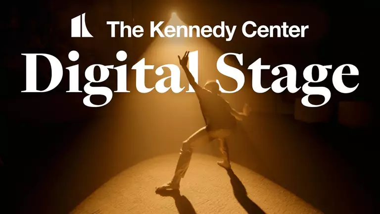
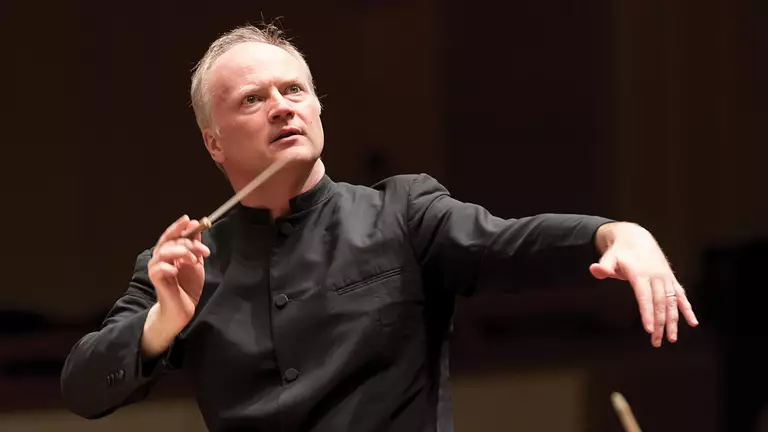

Bigins On :
Day’s
Hour’s
Minutes
Seconds

show in gallery
×
The Jazz Gallery All-Stars
The Jazz Gallery celebrates its 25th Anniversary with a special ensemble featuring many of the leading creative voices in jazz—performing in a unique concert experience that places you center on the Opera House Stage.
Opera House Stage GA
Thu. Oct. 8, 2020 8p.m
You May Also Like
Jack Gruber
Thu. Oct. 23, 2025
Pianist and composer Jack Gruber performs a dynamic blend of jazz, pop, video game music, and anime themes.Oct. 3 - 24, 2025
A secret encore awaits you high above the city lights. Following select evening performances, the rooftop bar transforms into the KC Speakeasy, an afterhours jazz club hidden in the sky. Sip specialty cocktails and enjoy late-night bites to the sounds of live music with an ever-changing lineup of special guest artists. Reservations recommended.

Millennium Stage (In-Person and Livestream)
Charles Covington Quartet
Thu. Oct. 30, 2025
Thu. Oct. 30, 2025 A virtuoso pianist, organist and spectacular talent, Charles Covington’s musical performances are enlightening and entertaining.Trey Sorrells
Wed. Nov. 5, 2025
Versatile saxophonist Trey Sorrells captivates audiences with his soulful sound and diverse musical expression.Jack Gruber
Thu. Oct. 23, 2025
Pianist and composer Jack Gruber performs a dynamic blend of jazz, pop, video game music, and anime themes.
